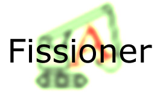
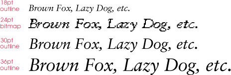
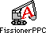
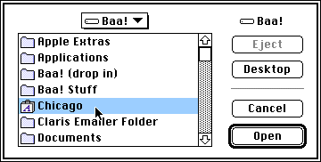
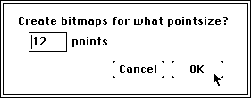
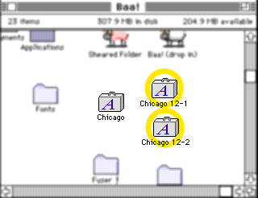
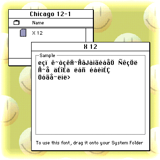

User Manual
Fissioner is a tool designed to generate bitmap information from TrueType outline fonts, and can be used either by itself or in conjunction with another tool called Fuser.
Used by itself, Fissioner can take a TrueType outline font and generate a bitmap font at a given size, preserving the metrics and spacing of the outline font. The resulting bitmap font can then be edited or simply installed in the System and used as normal.
Used with Fuser, Fissioner can take a TrueType outline font ('sfnt') and split it, creating 'nfnt' bitmaps which Fuser can then roll back into the 'sfnt' as embedded bitmaps ('sbit' tables). The designer may edit and modify the bitmaps before fusing if desired.
This feature was mainly provided to allow Chinese/Japanese/Korean (CJK) typography at small point sizes. Typically, CJK characters are far more complex than their Roman counterparts, and without hinting, the outlines of such characters can be reduced to little "ink-blots" at small sizes. However, the complexity of the glyphs - and more importantly, the sheer size of CJK glyph sets (A Chinese font typically has in excess of 12,000 glyphs) - precludes the use of instructing.
A workaround solution is to have two versions of each CJK font: an outline font for the larger sizes (above 24pt) and a set of bitmaps for the commoner small point sizes (16, 14, 12 and 10pt). This used to mean manually having to change font (from the outline to the bitmap font) when you changed pointsize.
With the advent of AAT, however, the same font file can now contain both bitmaps and outline data: where a bitmap exists, it is automatically used, otherwise the outline data is used to generate the characters as normal. The embedded bitmaps give designers of CJK fonts the best of both worlds: nicely rounded glyphs at large sizes (from the outline data) and legible, quickly-rendered glyphs at smaller sizes (from the bitmaps).
| Support for embedded bitmaps has been provided mainly to support CJK typography. Their use in non-CJK fonts is discouraged: TrueType instructing is more than adequate to ensure legibility of non-CJK fonts. |
There is one problem with using embedded bitmaps in a font - sometimes the bitmap version of a font has completely different metrics than the outline version. This often happens when designers widen glyphs in the font to improve legibility. The result of embedding such a bitmap into an outline font can be seen below.

As you can see, the bitmap stands out like a sore thumb - it's far wider than the other sizes, which were generated from outlines. To avoid this, you should always try to design a bitmap version of the font with the same metrics that the outline version would have.
Fortunately, if you use Fissioner, this problem will never arise. Because Fissioner produces bitmaps straight from the outline font data, they have the same spacing and other metrics as the outline-generated images at that point size. Thus, the Fissioner-generated font bitmaps will fit in seamlessly with the rest of the outline font (unless of course you radically change the letterforms!)
The current version of Fissioner is a fat binary, meaning you can run it on either a 68k machine or a PowerPC machine.
It is recommended that you make a copy of your original suitcase before you begin, and store it somewhere other than in the folder in which you intend to work.



Enter the point-size of your choice, and click OK.
The application will generate suitcase(s) of 256 bitmaps each in the same folder that contains your original outline font. The original font is not modified.
If the original font contains more than 256 glyphs, the fissioner will create multiple suitcases, named after the original 'sfnt', followed by a number indicating the bitmap size and the sequence number of the suitcase. For example, "Chicago", when Fissioned for 12pt, creates two suitcases called "Chicago 12-1" and "Chicago 12-2", as shown below

Repeat all steps to create other bitmap sizes as desired.
At this point, the designer can choose to edit or modify the 'nfnt' bitmaps, using a standard bitmap editor.
When the bitmaps have been edited, Fuser can be used to embed them into the TrueType font.

Because this bitmap font is intended only as an intermediate step in
the font design process, this name is not important. Nevertheless, the
name should not be changed, because doing so would confuse Fuser later.
To report bugs or suggest improvements to these tools, contact Dave Opstad at opstad@apple.com.